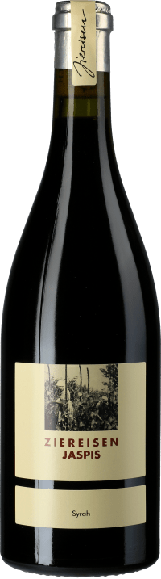

Unsere exquisit Auswahl an Weinen
Unsere Rotweine von Ziereisen
Jaspis Chardonnay trocken 2017
Nach 20 Monaten der Reifung im Barrique trägt der Wein in gelbgrünem Gewand Tiefgang und Elan ins Glas. Sein einladendes und frisches Bukett erinnert an Birnen, Pfirsich und vage an Ananas. Mineralische Salzigkeit,
beeindruckende Kraft und einmalige Eleganz: Der "Jaspis" begeistert den Gaumen vom Antritt bis zum ausgedehnten Abgang. Dank seiner schön eingebundenen mineralischen Säure eignet sich dieser Chardonnay hervorragend als Aperitifwein,
passt aber genauso gut zu weißem Fleisch, Krustentieren und Meeresfrüchten sowie zu Frischkäse.
13% VOL
69,80€

Jaspis Pinot Noir trocken 2017
Kaum ins Glas gekommen, entfaltet er ein sattes Bukett nach reifer Kirsche, unterstrichen von einer rauchigen Note.
Am Gaumen hält sich die Frucht zunächst zurück, jedoch zeigt sich dieser fokussierte Spätburgunder mit beachtlichem Trinkfluss.
Straff und dicht gleitet er schließlich in einen langen Ausklang.
12,5% VOL
45,00€

Jaspis Syrah trocken 2017
In dunklem Kirschrot mit violetten Aufhellungen am Rande präsentiert sich der Ziereisen Jaspis Syrah trocken im Weinglas.
Das Bukett eröffnet edle Aromen von dunklen Waldbeeren, Nelken, zerstoßenen Kakaobohnen, getoastetem Eichenholz, rosa Pfeffer und Graphit.
13% VOL
50,00€

Unsere Weißweine von Ziereisen
Jaspis Gutedel 10 hoch 4 Alte Reben trocken 2017
Lassen sie Ihre Nase von einem beeindruckend mineralischen Duft nach Feuerstein, begleitet von reifen Birnen und Äpfeln umhüllen.
Den Gaumen verführt dieser goldgelbe Tropfen mit klarer Geradlinigkeit. Cremig, weich, charmant, dabei schlank und nahezu puristisch.
Das lange Finale offenbart schließlich einen imposanten, mineralisch-salzigen, ja steinigen Druck. Ein Gutedel der Oberklasse, der seinen Preis um jeden Cent wert ist.
125,00€
12,5% VOL

Jaspis Chardonnay Hard trocken 2017
Kühle Nase mit Marzipan und Vanillekipferl, Blüten, Trockenstrauß und süße Röstaromen. Klar und feinsaftig, lebendig und frisch, fest mit Kraft und Power, sehr direkt und ausdrucksstark, komplexe Aromen von Bleistift, Marzipan, grünem Stängel, Quitte, Apfelschale, Eukalyptus, gerösteten Mandeln und einer feinen unterschwelligen Extraktsüße, kräuterige und salzige Mineralität, tief und komplex mit viel Substanz,
langes mit anhaltendem Aromenspiel und feiner Süße mit gleichzeitig animierende Frische.
26,90€
14% VOL
Email: baumgaertel.tina@hs-furtwangen.de
Moretum Bianta